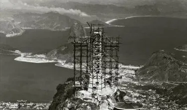
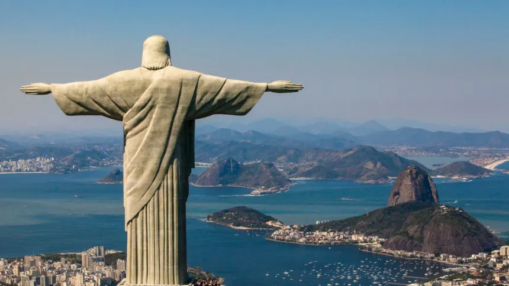
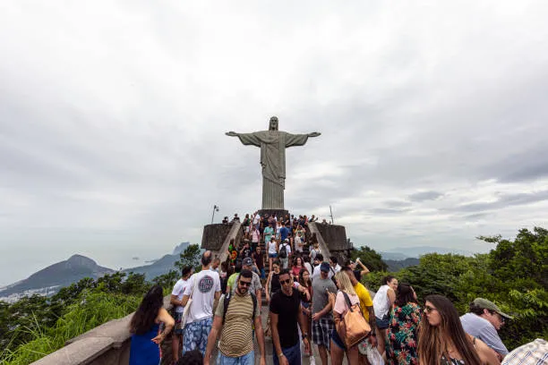

Cristo Redentor
Publicado por Ignacio Bruno en Octubre de 2025

Ubicado en Río de Janeiro, Brasil, el Cristo Redentor es una estatua de 38 metros de altura situada en la cima del cerro del Corcovado, dentro del Parque Nacional de Tijuca. Desde su mirador se puede observar una vista panorámica espectacular de la ciudad, incluyendo el Pan de Azúcar, las playas de Copacabana e Ipanema y el famoso estadio Maracaná.
Inaugurada en 1931, la estatua representa la paz y la fe del pueblo brasileño. Con sus brazos abiertos de 28 metros, simboliza el abrazo de Cristo hacia toda la humanidad. Fue declarada una de las Nuevas Siete Maravillas del Mundo Moderno en 2007, consolidándose como uno de los monumentos más emblemáticos del planeta.
Historia
La idea de construir una gran estatua de Cristo en Río de Janeiro surgió a fines del siglo XIX, pero el proyecto recién se concretó en la década de 1920. Fue diseñado por el ingeniero brasileño Heitor da Silva Costa, con la colaboración del escultor francés Paul Landowski, quien creó la figura de Cristo.
La obra comenzó en 1926 y se completó en 1931. Su inauguración se realizó el 12 de octubre de ese año, coincidiendo con el Día de Nuestra Señora Aparecida, patrona de Brasil. Desde entonces, el monumento se ha convertido en un símbolo nacional de fe y unidad.
Arquitectura
El Cristo Redentor mide 30 metros de altura, más un pedestal de 8 metros, y fue construido con hormigón armado recubierto de piedra jabonosa, un material resistente al clima tropical y de fácil mantenimiento. La estructura está hueca por dentro, y se puede acceder a su interior para tareas de mantenimiento.
El diseño de sus brazos abiertos, extendidos en cruz, fue cuidadosamente calculado para resistir vientos fuertes y sismos. La cabeza mide 3,75 metros y cada mano 3,20 metros, mostrando el nivel de detalle y la precisión que caracterizan la obra.
Turismo
Hoy en día, el Cristo Redentor es el principal atractivo turístico de Río de Janeiro. Cada año, millones de personas lo visitan subiendo por tren, van o a pie hasta el mirador del Corcovado. Desde allí, se obtienen algunas de las vistas más impresionantes de toda Sudamérica.
Por las noches, el monumento se ilumina con luces LED que cambian de color en ocasiones especiales. Además, durante Semana Santa, Navidad o eventos deportivos, el Cristo se convierte en el epicentro de celebraciones religiosas y culturales.
